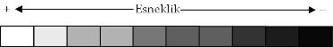

"Her yiğidin bir yoğurt yiyişi vardır"
Çok eski çağlardan beri kişilik kavramı ile ilgili bir çok görüş ileri sürülmüş olmasına karşın, günümüzde hala kişilik kavramının nasıl tanımlanacağı konusunda belli bir görüş birliği bulunmamaktadır. Kişilik kavramını ilk tanımlamaya çalışan kişilerden birisi olan Hipokrat, kişilik yapısının beden salgıları ile ilişkili olduğunu ileri sürerek "iyimser / kanlı", "sinirli / sarı safralı", "melankolik / kara safralı" ve "soğukkanlı / balgamlı" olmak üzere dört kişilik yapısı tanımlamıştır. Diğer yandan çok eskiden beri kişilikler beden yapılarına göre tanımlanmaya çalışılmış fakat yapılan araştırmalar beden yapısı ile kişilik yapıları arasında birebir ilişki olmadığını göstermiştir. Kretschmer insanları beden yapılarına göre atletik, piknik ve astenik tip olarak ele almıştır. Çocukluk yıllarında yaşananların insanın psikolojik gelişimini etkilediğinin gözlenmesi, kişilik yapısının gelişimi ile ilgili çeşitli psikolojik görüşlerin ortaya atılmasına neden olmuştur. Freud, kişilik yapısının gelişiminde insanoğlunun ilk 5 yılının önemini vurgulamıştır. Her hangi bir çocukluk döneminde yaşanan sorunların kişide o döneme özgü izler bıraktığı ve bu izlerin kişilik yapısının oluşmasında etkili olduğu ileri sürülerek kişilik yapıları çocukluk dönemlerine ("oral kişilik", "anal kişilik" ve "genital kişilik") göre tanımlanmıştır. Jung ise kişilik gelişiminin yaşam boyu yaşanan bir süreç olduğunu ileri sürmüş ve temel toplumsal uyum biçiminden yola çıkarak içe-dönük (introvert) ve dışa-dönük (ekstrovert) kişilik yapılarını tanımlamıştır.
Günümüzde ise kişilik yapıları ağırlıklı olarak gözlenebilen davranışlara göre tanımlanmakta ve kişilik yapılarının ortaya çıkışında genetik, psikolojik ve toplumsal etmenlerin rolü olduğu düşünülmektedir.
Kişilik denildiğinde ilk akla gelen o kişinin davranış biçimi ve davranış kalıplarıdır. Kişilikle ilgili olarak zaman zaman kişilik özellikleri, kişilik yapısı ve kişilik bozukluğu gibi kavramların kullanıldığı görülmektedir. Aslında her kişilik yapısının belli bir süreklilik ya da bir yelpaze içinde düşünülmesi gerekmektedir. Bu yelpazenin bir ucunda gerektiğinde toplum içinde uyum sağlamaya yönelik esneklik gösterebilen diğer ucunda ise katı, hiçbir koşulda esneklik gösteremeyen kişilik özellikleri bulunmaktadır. Örneğin alıngan bir kişinin gerekli açıklamalar yapıldıktan sonra alınmaktan vazgeçmesi esneklik gösterebilen, ne yapılırsa yapılsın alınganlığından tam vazgeçememesi ise esneklik gösteremeyen bir kişilik yapısına sahip olduğunu göstermektedir. Esneklik gösteremeyen kişilik özellikleri daha fazla kişilik bozukluğu düşündürmelidir. Ancak toplumsal uyumu bozan bir kişilik örüntüsünün varlığını ifade etmek amacıyla kullanılan kişilik bozukluğu teriminin çok farklı anlamlar taşıyacak şekilde ve karşıdakini aşağılamak amacıyla kullanılabilmesi nedeniyle günlük dilde kullanılmaması daha uygun gibi görünmektedir.
Esneklik gösteremeyen kişilik özellikleri olan insanlar başkaları için geçinilmesi zor insanlardır. Kişilik yapıları ile birlikte düşünüldüğünde her bir kişilik yapısına özgü geçinilmesi zor insanlar olacağı ortaya çıkmaktadır. Bu kitapta da geçinilmesi zor insanlar kişilik yapılarına göre paranoid, şizoid, şizotipal, antisosyal, sınırda (borderline), histriyonik, narsisistik, çekingen, bağımlı, obsesif kompulsif, depresif ve pasif agresif kişilik yapısı şeklinde ayrı ayrı ele alınacaktır.
Her ne kadar her insan kendine özgü kişilik özellikleri taşıyor olsa da kişilik özelliklerini bazı kategorilere ayırmak mümkün olabilmektedir. Nitekim birbirinin kopyası derecesinde olmasa da toplum içinde kişilik özellikleri birbirine benzeyen bir çok kişi bulunmaktadır. Aşağıda çeşitli kişilik yapıları ve onların diğer insanlarla geçinmelerini zorlaştıran özellikleri tanımlanacaktır. Ancak insanları kişilik özelliklerine göre sınıflandırırken aşağıdaki konulara dikkat edilmelidir:
• Her bir kişilik yapısında tanımlanan özelliklerin tümü hiçbir zaman tek bir kişide bulunmaz.
• Aynı kişilik yapısında olmasına karşın farklı insanlarda farklı özellikler daha önplanda olabilmektedir.
• Hiç bir insanda tek bir kişilik yapısının özellikleri bulunmaz; her insanda bir çok kişilik yapısından bir çok kişilik özelliği bir arada bulunur.
• Hangi kişilik yapısı ya da kişilik yapıları onun temel özelliklerini belirliyorsa, kişide o kişilik yapısının ya da yapılarının bulunduğu belirtilir.
Her hangi bir insanın kişilik özelliklerini değerlendirirken
o kişinin ne tür olaylar karşısında ne tür duygular
yaşadığına, aklından neler geçtiğine ve ne tür
tepkiler gösterdiğine bakmak gerekmektedir.
Her hangi bir insanın kişilik özellikleri konusunda fikir yürütebilmek için o kişiyi iyi tanımak gerekmektedir. İlk kez tanıdığınız ya da sınırlı sayıda gördüğünüz ve görüştüğünüz bir kişinin kişilik yapısı konusunda bazı öngörülerde bulunulabilmekle birlikte, kesin yargılarda bulunmaktan kaçınılmalıdır. Her hangi bir kişinin çok değişik ortamlarda, çok değişik durumlarda ve özellikle çatışma sırasında nasıl davrandığını görmeden o kişinin kişilik yapısı ile ilgili yanılma payı sürekli olarak akılda tutulmalıdır. Zorlayıcı ortamlarda ya da çıkarların çatıştığı durumlarda insanların maskeledikleri kişilik yapıları ortaya çıkabilmekte önceden tahmin edilemeyen davranışlar görülebilmektedir.
Bir insanın her türlü davranışının onun kişilik yapısı ile bir şekilde ilişkisi bulunmakla birlikte, bir insanın her hangi bir özelliğinin kişilik yapısının bir parçası sayılabilmesi için o özelliğin tekrar tekrar gözlenmesi, zaman ve mekana göre pek büyük bir değişiklik göstermeden ortaya çıkması gerekmektedir. Örneğin her insan zaman zaman çekingenlik yaşayabilir fakat çekingenliğin bir kişilik özelliği sayılabilmesi için bunun (ortamdan ortama şiddeti değişebilmekle birlikte) hemen her ortamda ortaya çıkması gerekmektedir.
Bir insanın kişilik yapısını sahip olduğu biyolojik donanım kadar içinde yetiştiği çevre de belirler. Kişilik yapısı büyük oranda çocukluk yıllarında şekillenmekte ve ergenlik yıllarında oturmaktadır. Bu nedenle her hangi bir tutum ve davranışın kişilik özelliği sayılabilmesi için çocukluk ya da ergenlik yıllarından beri gözleniyor olması gerekmektedir. Daha ileri yaşlarda ortaya çıkan ve uzun süren davranış örüntülerinin bir bedensel ya da ruhsal hastalık belirtisi olup olmadığı dikkatli bir biçimde incelenmelidir. Örneğin depresyondan kaynaklanan genel isteksizlik ve durgunluk hali kişilik yapısı olarak değerlendirilmemelidir.
İnsanların kişilik yapısını anlamaya çalışırken
kişiliği oluşturan bileşenler olan "duygu",
"düşünce", "tutum" ve "davranış" özelliklerini
incelemek gerekmektedir.
İnsanların kişilik özelliklerini betimlemeye çalışırken kişilik yapısının temel bileşenlerine bakılmalıdır. Bu bileşenler aşağıda "duygular", "istek, gereksinim ve dürtüler ile ilişki biçimi", "düşünce / biliş", "ilişki / iletişim / tutum" ve "eylem/ davranış" başlıkları altında incelenecektir.
Duygular
İnsanın en önemli özelliklerinden birisi de duygulanabilme ve duygu yaşayabilme potansiyeline sahip olmasıdır. İnsan yaşamını bir yandan renklendiren ve yaşamına anlam katan bir özellik olan duygular, bir yandan da kişilik yapısını belirleyen önemli özelliklerden birisidir. Her hangi bir insanın duygusal yapısını incelerken aşağıda tanımlanan özellikler dikkate alınmalı ve kişi bu başlıklarla betimlenmelidir.
• Genel duygusal yapı
Herkesin zaman zaman yaşadığı duygular yanında genel bir duygusal tonu vardır. Nitekim insanların genel duygusal yapılarını anlatmak için insanları "neşeli", "karamsar" gibi sıfat-lar ile niteleriz.
• Yaşadığı duygular
Her insan genel duygusal yapısı yanında günlük yaşamında her türlü yaşantısına eşlik eden ve yaşananlara göre değişen duygular yaşamaktadır. Örneğin genel olarak neşeli olan bir insan, yaşadığı bir olay nedeniyle üzüntü yaşayabilir. Her hangi bir insanın hangi olaylar karşısında ne tür duygular yaşadığı, hangi duyguları daha sık yaşamaya eğilimli olduğu o kişiyi tanımada önemli ipuçları verir.
• Duyguların davranışlara etkisi
Bazı kişiler duyguların çok fazla etkisinde kalırken (örneğin en küçük istekleri gerçekleşmediğinde öfkelenip, bağırıp çağırırken) bazı kişiler ise duygularını aşırı denetim altında tutarlar (örneğin bir çok kişiyi sevindirecek ya da üzecek bir olay karşısında donuk kalırlar). Bir insanın yaşadığı duyguların onun düşüncelerini, tutum ve davranışlarını nasıl etkilediği kişilik yapısını belirlemede önemli bir ögedir.
• Duyguların gelip geçiciliği ya da uzun sürmesi
Bazı kişiler yaşantılarına eşlik eden duygulardan kolay kolay kurtulamazken, bazı kişiler ise çok kolay başka bir duyguya geçebilmektedirler. Kişinin hangi olaylardan sonra yaşadığı duygulardan kolay kolay kurtulamadığı o kişiyi tanımada önemli ipuçlarıdır.
• Duygularının farkında olup olmadığı
Yaşadığı duyguları tanımayan, tanımlayamayan ve ayrıştırabilme yetisine sahip olmayan birçok insan bulunmaktadır. Duygularını yeterince ayrıştıramayan kişiler, kendisini "kötü" hissettiğinden ya da "iyi" hissetmediğinden söz eder ya da her türlü olumsuz duyguyu üzüntü ya da sıkıntı olarak nitelerler. Oysa insan çoğu zaman her birinin kendine özgü anlamları olan bir çok duyguyu bir arada yaşar. Örneğin eşinden boşanan bir kişi üzüntü yanında hayal kırıklığı, öfke, değersizlik ve utanç gibi bir çok duyguyu bir arada yaşar.
• Duygularını ifade edip etmediği
İnsanın duygularını tanıması ve ayrıştırabilmesi kadar bunları ifade edip etmediği ve ne şekilde ifade ettiği de o kişiyi tanımada önemli ipuçları verir. Bazı insanlar yaşadıkları duyguları hiçbir şekilde ifade etmezler. Ne sözlerinden, ne görünüşünden yaşadığı duygular anlaşılmaz. Bazı kişiler aşırı denetimlidirler, yaşadığı duyguların anlaşılmaması için yoğun çaba harcarlar. Bazı insanlar duygularını sözel olarak ifade etmese de duyguları sözel olmayan (beden dili) ifadelerinden kolayca anlaşılır. Sinirli bir hal içinde olan bir kişinin bunu açıkça kabul etmemesine karşın çevresindeki insanlar tarafından davranış ve görünümü nedeniyle sinirli halinin kolayca anlaşılması bu duruma bir örnek olarak verilebilir. Bazı insanlar ise yaşadıkları duyguları olduğundan daha şiddetli yaşama eğilimindedirler. Sıradan bir haber aldığında sanki aldığı haber yaşamını bütünüyle değiştirecekmişçesine sevinç yaşayan kişi bu duruma bir örnek olarak verilebilir. Bu kişilerin yaşadığı duygular dışarıdan çoğu zaman abartılı gibi, sanki rol yapıyormuş gibi görünür.
Diğer yandan duyguların ifade edilebilirlikleri arasında büyük farklılıklar da bulunmaktadır. Karşıdaki kişiyi olumsuz etkileyeceği ya da ilişkileri bozacağı düşünülen duyguları ifade etmekte bir çok insan çeşitli güçlükler yaşar. Bu tür duyguların ifade edilip edilmediği ya da nasıl ifade edildiği kişilik yapısını belirlemede yararlı ipuçlarıdır. Bu tür duyguları ifade edebilmede iki uçtan birisi bunları denetimsizce ifade etmek iken diğeri bu tür duyguları hemen hiç ifade etmemedir.
• Duyguların davranışlara etkisi
İnsanın yaşadığı duygular onun diğer insanlara yönelik tutum ve davranışlarını etkileyebilmektedir. Örneğin bir çok kişi sinirli olduğu zamanlarda daha kolay parlamakta, daha az hoşgörülü olmaktadır. Duyguların insanın tutum ve davranışlarını etkilemesi son derece doğal olmasına karşın bu etkileme bazı durumlarda ilişkileri bozacak düzeyde olmaktadır. Bu durum özellikle geçinilmesi zor kişilik yapısına sahip kişilerle ilişkilerde sık sık yaşanmaktadır. Bir yandan geçinilmesi zor kişilerin duygularından kolayca etkilenebilmeleri, bir yandan da geçinilmesi zor kişilerin ilişki içinde oldukları insanların hemen her zaman yoğun duygular yaşamasına yol açmaları bu durumun ortaya çıkmasına neden olmaktadır. Bir insanın kişilik yapısını incelerken duygularının davranışlarını ne kadar ve nasıl etkilediği belirlenmelidir.
• Yineleyen duygular
İnsanların belirli ortamlarda yineleyen bir şekilde aynı duyguyu yaşaması o kişinin iç dünyası hakkında yararlı bilgiler vermektedir. Örneğin bazı kişiler otorite olarak gördükleri insanlar karşısında çok heyecanlanırlar. Bu bilgiler kişilik yapısının tanımlanmasında da çok yararlı ipuçlarıdır.
• Duyguları ile baş etme yolları
Duygular ile baş etme denildiğinde akla çoğu zaman olumsuz duygular gelse de bazen olumlu duygular da baş etme sorunu yaratabilmektedir. Örneğin çok sevinçli bir kişi olağan durumlarda hiçbir zaman yapmadığı şeyleri yapmaya kalkışabilir. Fakat öfke, suçluluk ve değersizlik gibi olumsuz duygular ile nasıl baş ettiği o kişi hakkında önemli ipuçları verir. Bazı kişiler öfkelerini denetleyemezler ve anında sözel ya da fiziksel saldırganlık gösterirler. Yine insanlarla ilişkilerde kolayca aşağılandığı, istenmediği duyguları yaşayarak kendisini değersiz hisseden bazı kişiler toplum içine karışmaktan kaçınabilmektedirler.
İstek, gereksinim ve dürtüleri ile nasıl bir ilişki içinde olduğu
İnsanın gereksinim, istek ve dürtüleri ile nasıl bir ilişki içinde olduğu onun kişilik yapısını belirleyen ögelerden birisidir. İnsanın istek, gereksinim ve dürtülerinin farkında olması, onlara sahip çıkması, karşılıklarını bulması için çaba harcaması, istek ve gereksinimlerini doyurduğunda bundan zevk alabilmesi, koşullar nedeniyle ertelemek zorunda kaldığında buna katlanabilmesi gerekmektedir.
• İstek ve gereksinimlerinin farkında olmak
Bazı insanlar istek ve gereksinimlerinin pek farkında olmazlar. Ne istediklerini, ne amaçladıklarını, ne yapmak istediklerini tam olarak bilemezler. Çoğu zaman çevresindekilere uyum gösterir, onların istek ve gereksinimlerine göre hareket ederler. Yemek seçiminde kararsız kalan ve kolay kolay karar veremeyen, yanındakilerin ne yemek istediğine bakarak karar veren bir kişi bu duruma örnek olarak verilebilir.
• İstek ve gereksinimlerine sahip çıkma
Bazı insanlar kendi istek ve gereksinimlerinden çok başkasının istek ve gereksinimlerini önemser, kendisinin hiçbir istek ve gereksinimi yokmuş gibi davranır ve tüm yaşamlarını diğer insanların gereksinimlerini karşılamaya adarlar. Bazı insanlar ise tam tersi yalnız kendi istek ve gereksinimlerinin karşılanması beklentisi içindedirler; bencildirler, diğer insanların istek ve gereksinimlerini hiç önemsemezler. Fakat bir çok kişi istek ve gereksinimlerine sahip çıkma açısından bu iki uç durumun arasında bir yerde kalmaktadır. İnsanın istek ve gereksinimlerine sahip çıkmasının bir yönü de istek ve gereksinimlerinin savunucusu ve takipçisi olmasıdır. Bir kişinin kişilik yapısı hakkında fikir yürütebilmek için o kişinin farkında olduğu istek ve gereksinimlerini karşılamak için çevresindekilerle ne tür bir ilişki içine girdiği de belirlenmelidir. Bazı kişiler isteklerini diğer insanlara kolayca ifade edebilirken bazıları kolayca ifade edememekte ve karşı tarafın bunu o söylemeden anlamasını beklemektedirler. Bazıları da ne olursa olsun herkesin kendisi için seferber olması beklentisi içindedirler. Bazı kişiler de istek ve gereksinimlerini zor kullanarak ya da tehdit ederek karşılamaya çalışmaktadır.
• İstek, gereksinim ve dürtülerin niteliği
Bazı kişilerin kendisinden, yaşamdan ve insanlardan beklentileri karşılanması ya da doyuma ulaştırılması mümkün olmayan nitelikler taşımaktadır. Bu durum bir çok kez hayal kırıklıkları yaşanmasına neden olarak kişinin dünyaya ve geleceğe karamsar bir gözle bakmasına neden olmaktadır. Bazı kişilerin ise sanki hiçbir istek ve gereksinimi yokmuşçasına ya da istek ve gereksinimlerinin nasıl olsa karşılanmayacağı beklentisi içinde oldukları görülmektedir. Bu durum özellikle çocukluk ve gençlik yıllarında maddi ve manevi yoksunluklar yaşayan kişilerde görülmektedir. İstek ve gereksinimlerini her zaman küçümseme ve önemsizleştirme eğilimindedirler.
• İstek, gereksinim ve dürtülerine erteleyebilme
İnsanların tüm istek, gereksinim ve dürtülerini karşılayabilmesi ya da doyuma ulaştırması mümkün değildir. Bazen ortamın uygun olmaması, bazen zamanın uygun olmaması, bazen diğer insanların istek ve gereksinimleri nedeniyle, bazen de bunların gerçekleşmesi mümkün olmayan özelikler taşıması nedeniyle istek ve gereksinimler karşılanamamaktadır. Fakat bazı insanların istek ve gereksinimlerini bekletebilme ve erteleyebilme becerileri gelişmemiştir ve isteklerinin bekletilmeden anında yerine getirilmesi beklentisi içindedirler. Diğer yandan bazı kişilerin de tüm istek ve gereksinimlerini yok sayarak ertelediği ve hiçbir istek ve gereksinimi yokmuş gibi davrandığı unutulmamalıdır.
İnsanın istek ve gereksinimlerini gerektiğinde ertelemesi ve daha uygun bir zaman ve ortamda yeniden doyum arayışına girmesi toplumsal ilişkileri kolaylaştıran bir beceridir.
• İstek, gereksinim ve dürtüleri doyum bulduğunda kişinin yaşadığı duygular
Genelde istek ve gereksinimleri karşılanan kişiler, psikolojik bir doyum yaşar; mutlu, sevinçli, neşeli ve keyifli olurlar. Fakat bazı kişiler her şeye karşın psikolojik doyum yaşayamazlar. Bunların bir kısmı açgözlülükten, bir kısmı gerçek istek ve gereksiniminin farkında olmamasından, bir kısmı bu doyumu yaşamayı hak etmediğini düşündüğünden kaynaklanmaktadır.
• İstek, gereksinim ve dürtülerini ertelemek zorunda kaldığında yaşadığı duygular
İstek ve gereksinimi karşılanmayan bir kişinin hayal kırıklığı yaşaması, özdeğerlilik duygusunun incinmesi ve öfkelenmesi doğal bir durumdur. Fakat bu duyguların şiddeti ve karşılanmayan istek ve gereksinim ile uyumlu olup olmadığı da önem taşımaktadır. Bazı kişiler en küçük ertelemede bile aşırı tepki göstermektedir; böyle bir durumda kimi insanlar diğer insanlarla ilişkilerini kesmekte, küserek ve gücenerek kendilerini geriye çekmekte, kimileri ise öfke ve saldırganlık göstermektedir.
Düşünce / Biliş
Her insanın kendine özgü "kendini", "diğer insanları", "yaşadığı ya da gözlemlediği olayları" ve "dünyayı" algılama, değerlendirme, anlamlandırma, yorumlama ve bilme biçimleri vardır. İnsanın duyu organları ile algıladığı uyaranları anlamlandırma, yorumlama ve bilme biçimleri düşünce olarak adlandırılır. İnsan, sahip olduğu zihinsel ve ruhsal birikimler ile iç dünyasından ve dış dünyadan gelen uyaranları süzer, algıladığı uyaranları anlamlı bir bütün haline getirerek kendine özgü bir bilme, anlamlandırma ve yorumlama süreci yaşar.
• Temel inançlar
İnsanın kendisi ve çevresi ile ilgili kökleşmiş değerlendirmelerine ve düşüncelerine temel inançlar denilmektedir. Temel inançlar kişilik yapısını belirleyen yapılardır ve kişinin kendisi ile ilgili değerlendirmelerini yansıtır ve kişilik yapısını anlamada önemli ipuçları verir. Örneğin kendisini beğenmeyen ve başkalarının da kendisini beğenmeyeceğini düşünen bir kişinin özgüven sorunları yaşayan kişilik yapısına sahip olma olasılığı çok yüksektir.
• Otomatik düşünce
Otomatik düşünceler bir olay yaşadığında insanın aklına kendiliğinden gelen düşüncelerdir. Her hangi bir düşüncenin otomatik düşünce olarak adlandırılabilmesi için düşüncenin zorlama olmadan, akıl ve mantık yürütmeden ortaya çıkması gerekmektedir. Otomatik düşünce olarak adlandırılan bu düşünceler tesadüfen ortaya çıkan düşünceler olmayıp, yaşanan olayla ilgili kişinin ilk tepkileridir ve büyük oranda temel inançlar tarafından belirlenir. Markette raftan bir deterjan almak isterken raftaki bütün deterjanlar devrildiğinde aklına ilk olarak "ne kadar sakar bir insanım" düşüncesi gelen kişinin bu düşüncesi otomatik düşünceye örnek olarak verilebilir. Bu kişi büyük olasılıkla "kendisini kolay eleştiren", "kendisini pek beğenmeyen" ve "çevrenin kendisiyle ilgili değerlendirmeleri önemseyen" bir kişilik yapısına sahiptir. Otomatik düşünceler insanın kendi denetiminde olmayan fakat bir yandan da içeriğine uygun duygu yaşanmasına neden olan düşüncelerdir. Örneğin yukarıda verilen örnekteki kişi aklından geçen otomatik düşünce ("ne kadar sakar bir insanım") ile birlikte kendisine öfkelenir ve kendisini aşağılar. Görüldüğü gibi otomatik düşünceler insanın ruhsal yapısı hakkında fikir verir ve bir insanın kişilik yapısını değerlendirirken mutlaka dikkate alınmalıdır.
• Şema
Bir insanın dünyayı, kendisini ve yaşadıklarını değerlendirirken kullandığı bilişsel yapılara şema denir. Bu bilişsel yapılar bir insanın neyi nasıl değerlendireceğini ve yorumlayacağını belirleyen bir çerçeve (değerlendirme, yorumlama ve anlamlandırma çerçevesi) niteliği taşır. Örneğin kendisini "sevilmeyen bir insanım" şeklinde değerlendiren bir temel şemaya sahip bir kişi diğer insanların kendisini sevmeyeceğini ya da kolayca sevmekten vazgeçeceğini düşünme eğilimindedir. Bu temel şemaları nedeniyle diğer insanlar tarafından sevilmek için ellerinden geleni yaparlar.
• Bilişsel çarpıtma
Bilişsel çarpıtma, olayları olduğundan daha farklı algılama, değerlendirme ve yorumlamayı ifade eden bir kavramdır. Özellikle geçinilmesi zor insanlarda çok yaygın görülmektedir. Çok sayıda bilişsel çarpıtma türü bulunmasına karşın aşağıda sık gözlenen bilişsel çarpıtmalara örnekler verilmiştir.
Düşünce okuma: Bir kişinin elinde yeterli kanıt bulunmamasına karşın başkalarının kendisi ile ilgili ne düşündüğünü bildiğini ileri sürmesidir. Başkalarının kendisi hakkında değersiz, işe yaramaz ve önemsiz bir insan olduğunu düşündüklerini ileri sürme bu tür çarpıtmaya örnek olarak verilebilir.
Aşırı genelleme: Tek bir yaşantıdan yola çıkarak kişinin kendisi hakkında genel yargılarda bulunmasıdır. Bir maçta iyi futbol oynamasına karşın yaptığı bir hata nedeniyle takımı gol yiyen ve takımı maçı kaybeden bir futbolcunun kendisinin kötü bir futbolcu olduğunu düşünmesi bu tür çarpıtmaya örnek olarak verilebilir.
Kişiselleştirme: Her hangi bir olayın ortaya çıkmasında ya da bir sorunun yaşanmasında bir çok kişinin sorumluluğu olmasına karşın bir kişinin olup bitenden kendisinin sorumlu olduğunu düşünmesidir. Takımı yenilen bir basketbolcunun yenilgiden kendisini sorumlu tutması bu tür çarpıtmaya örnek olarak verilebilir.
İlişki / İletişim / Tutum
• İlişki kurma biçimi / İletişim kurma biçimi
Bir insanın diğer insanlarla ilişkiye girme ve onu sürdürme biçimi o kişinin kişilik yapısı hakkında önemli ipuçları vermektedir. Bir insanın ilişki kurma biçimini değerlendirirken diğer insanlarla kolayca ilişkiye girip giremediği, bunu sürdürüp sürdüremediği, kalıcı ve uzun soluklu ilişkiler kurup kuramadığı, yakın ve sevecen davranıp davranamadığı, nasıl bir arkadaş olduğu, çok sayıda arkadaşının olup olmadığı ve topluluk içinde nasıl davrandığı incelenmelidir.
• Tutum
Tutum, esas olarak bireye atfedilen bir eğilimdir ve bireyin belli bir davranışı göstermeye yatkınlığını ifade eder. Bir kişinin belli bir konudaki tutumu bilindiğinde, o konu ile karşılaşınca nasıl bir davranış sergileyeceği büyük oranda tahmin edilebilir. Örneğin ruhsal hastalıklara yönelik olumsuz tutuma sahip bir kişi, ruhsal hastalık yaşayan bir kişi ile karşılaştığında ondan uzak durmaya çalışır. Tutumlar, kişiliği oluşturan özellikler arasında önemli bir yer tutmaktadır.
Genel görünümü, giyim ve kuşam tarzı
Her hangi bir insanla ilk karşılaşıldığında ilk dikkati çeken onun giyim-kuşamı, hal-hareket ve tavırlarıdır. Bir kişinin genel görünümünü, giyim ve kuşamını belirleyen en önemli etmenlerden birisi de kişilik yapısıdır. Bir kişinin dış görünümü değerlendirilirken "kendine bakım düzeyi", "saç ve sakalının durumu, kesim şekli, boyalı olup olmadığı", "bedenindeki takı, dövme ve yara izleri, bunların özellikleri", "giysilerinin rengi, bakımlılığı", "giysilerinin uyumlu olup olmadığı" ve "genel görünümün cinselliği ön plana çıkarıp çıkarmadığı" gibi özellikler dikkate alınmalıdır.
Beden dili
Beden dili insanların kişilik yapıları hakkında önemli ipuçları verebilen bir özelliktir. Fakat anlamı abartılmadan değerlendirilmeli ve mutlak belirleyici olduğu düşünülmemelidir. Bir çok kişi, insan davranışlarının anlamının kolayca çözülmesine olanak tanıdığını düşünerek beden dili ile ilgili bilgilere hak ettiğinden daha çok değer verir. Oysa dış görünümün ve beden dilinin o anki davranışları yorumlamada kısmen yararı olabilmekle birlikte, insanları tanımada kendi başına pek bir değeri yoktur.
Dış görünümü ve beden dilini yorumlayarak elde edilen bilgilerde (özellikle hangi ortamda, ne zaman ortaya çıktığı göz önüne alınmazsa) yanılma payı çok yüksektir. Örneğin genellikle spor giysileri giymeyi yeğleyen bir kişi ile tesadüfen takım elbise giydiği bir günde karşılaşıldığında o kişi ile ilgili yapılacak yorum muhtemelen yanlış olacaktır. Ancak diğer gözlemlerden elde edilen bilgilerle birleştirildiğinde ve süreklilik gösterdiğinde çok yararlı ve önemli bilgiler sağladıkları unutulmamalıdır. Örneğin bulunduğu ortamlarda ilgi odağı olmaktan hoşlanan bir kişinin giyim-kuşamı ve beden dili çoğu zaman ilgi odağı olmasını sağlayacak özellikler (ayartıcılık, göze çarpan renkler gibi) taşır.
Eylem / Davranış
İnsanın diğer insanlara, her türlü canlıya, hatta cansız varlıklara nasıl davrandığı o kişinin kişilik özellikleri hakkında önemli ipuçları vermektedir. İnsanı anlamada aklından geçen düşünceler ve yaşadığı duygular kuşkusuz çok önemlidir. Fakat sonuç olarak nasıl davrandığı, nasıl bir davranış gösterdiği daha da önemlidir. İç dünyasında yaşadıklarının (duygular ve düşünceler) davranışlarını nasıl etkilediği ruhsal yapıları hakkında önemli ipuçları verir. Örneğin vicdan duygusu yeterince gelişmemiş kişiler öfkelendiklerinde hiçbir rahatsızlık duymadan başkasına zarar verebilmektedir.
Başa Çıkma Düzenekleri
Günlük yaşamda zorluklarla karşılaşan her insan çeşitli düzeylerde duygusal, düşünsel, davranışsal ve bedensel tepkiler yaşar. Her hangi bir zorlanmanın yarattığı olumsuz duygular, düşünceler ve davranışlar ile kişinin nasıl baş ettiği büyük oranda o kişinin başa çıkma düzenekleri tarafından belirlenir. Herkesin karşılaştığı sorunlarla kendine özgü başa çıkma yolları vardır ve bunların belirlenmesi kişilik yapısı hakkında önemli ipuçları verir.
Zayıf / Duyarlı Yönleri & Güçlü Yönleri
Herkesin kişilik yapısının zayıf, duyarlı ya da güçlü yönleri bulunmaktadır. Güçlü yönleri onun diğer insanlarla ilişkilerini kolaylaştırırken, zayıf /duyarlı yönleri ise zorlaştırmaktadır. Örneğin başkalarının kendisi ile ilgili değerlendirmelerine duyarlı olan bir kişinin bu özelliği onun zayıf yönünü oluşturur ve kendisiyle ilgili eleştirilere onu kapalı hale getirir. Diğer yandan insanlarla kolayca ilişkiye girebilen ve karşısındakinde güven uyandırabilen bir kişinin bu özelliği onun güçlü yönünü oluşturur.
Esneklik gösterebilme
Aynı kişilik yapısına sahip olsalar da belli bir kişilik yapısına sahip kişilerde birbirinin aynısı davranış kalıpları görülmemektedir. Çekingenliği örnek olarak ele alacak olursak çekingenliğin herkeste aynı biçimde çıkmadığını görürüz. Çekingen kişilerin bazıları yaşadıkları her türlü zorluğa karşın toplumsal yaşama gerektiği kadar katılabilirken, bazıları ise yaşamlarını tümüyle toplumdan uzak sürdürmektedirler. Bu, kişilik yapılarını anlamaya çalışırken önemli güçlükler yaratan bir durumdur. Aynı kişilik yapısına sahip iki kişi, toplum içinde ve diğer insanlarla ilişkilerde birbirinden çok farklı davranışlar gösterebilmektedir. Bu noktada en önemli belirleyicilik, kişilik özelliğinin ne kadar esneklik gösterdiğidir. Esneklik, sahip olduğu kişilik yapısına karşın, farklı değerlendirebilmeyi ve davranabilmeyi ifade eden bir kavramdır.
Bu nedenle kişilik özelliklerinin ve kişilik yapılarının "beyaz ile siyah arasında sayısız gri"den oluşan bir yelpaze gibi düşünülmesinde yarar vardır. Beyazı uyum ve esneklik gösterebilmenin en uç kısmı, siyahı uyum ve esneklik gösterememenin en uç kısmı olarak düşünecek olursak, kişinin sahip olduğu özellikler ne kadar beyaza yakın bir gri ise bu özellik kişiler arası ilişkilerde o kadar az sorun yaratıyor demektir. Tam tersi ne kadar siyaha yakın ise kişiler arası ilişkilerde o kadar çok sorun yaratıyor demektir ve kişi o kadar çok geçinilmesi zor bir insan demektir. Bu noktada önemli olan söz konusu kişilik özelliğinin ne kadar esneklik gösterip gösteremediğidir. Kişilik özelliği ne kadar çok esneklik gösterebiliyorsa o kadar çok beyaza yakın bir gri, ne kadar az esneklik gösterebiliyorsa siyaha yakın bir gri demektir.
Bir kişilik özelliği olarak "alınganlık" bu konuya bir örnek olarak ele alınabilir. İçinde çok fazla yolcusu olmayan bir belediye otobüsüne yeni binen alıngan bir kişinin kendi halinde bir yandan konuşan ve gülüşen, bir yandan da gelene gidene ve otobüse binene bakan iki kişinin kendisi hakkında konuştuklarını ve kendisine güldüklerini düşündüğünü varsayalım. Eğer kişi aklına böyle bir düşünce gelmesine karşın, kısa bir değerlendirmeden sonra bu iki kişinin kendisi hakkında konuşmadığına kanaat getirip, alınganlıktan kaynaklanan düşüncesini kafasından uzaklaştırabiliyorsa, bu durum o kişinin alınganlığının esneklik taşıyan ve beyaza yakın gri nitelik taşıyan bir özellik olduğunu düşündürmelidir. Tam tersi kişi bu düşüncesini bir türlü kafasından atamıyorsa, hatta kendi halinde konuşan ve gülüşen bu iki kişiye gidip çıkışıyorsa bu durum o kişinin alınganlığının esneklik tanımayan ve siyaha en yakın gri nitelik taşıyan bir özellik olduğunu düşündürmelidir.

Konuyla ilgili atasözleri ve deyimler
• "Bir insanı tanımak için ya alış veriş etmeli ya yola gitmeli"
İnsanları tanımak çok kolay bir süreç değildir. Hatta yıllardır tanıdığınız bir kişiyi beklenmedik bir şekilde bildiğinizden çok farklı bir davranış içinde görebilirsiniz. Bir insanı iyi tanımak için onu çok değişik ortamlarda ve çok değişik koşullarda görmek gerekmektedir. Özellikle çıkar çatışmalarının olduğu ya da yoğun stres yaşanan durumlarda nasıl davrandığını görmek o kişiyle ilgili önemli ipuçları vermektedir.
• "Arslan yattığı yerden belli olur"
Bir insanın kişilik yapısını anlamaya çalışırken yalnız söylenenlerle sınırlı kalınmamalıdır. Bir insanın nasıl bir ortamda yaşadığı, yaşadığı ortama nasıl bir düzen verdiği ve ortamla olan ilişkisi o kişinin kişilik yapısı hakkında önemli ipuçları verir.
• "At, adımına göre değil adamına göre yürür"
Bir insanın kişilik yapısı onun yönetimi altında olan her şeye yansır. Kurumlarda insanların nasıl bir ilişki içinde olacağı büyük oranda en üst yöneticinin kişilik yapısı tarafından belirlenir.
• "Kişi arkadaşından bellidir"
Bir insanın kimlerle uzun süreli arakadaşlık yapacağı büyük oranda o kişinin kişilik yapısı tarafından ve iç dünyasının gereksinimleri tarafından belirlenir. Fakat bu atasözünün insanların arakadaşı ile aynı kişilik yapısına sahip olacağı şeklinde yotumlanmamalıdır. Kişinin arkadaşları ile nasıl bir ilişki içinde olduğu, o kişilerle arkadaşlık yaparken iç dünyasında hangi gereksinimlerini karşıladığı anlaşılmaya çalışılmalıdır.
• "Kimse ayranım ekşi demez"
İnsanların büyük bir kısmı başkalarındaki olumsuz özellikleri kolayca görürken kendisindekileri görmez. İnsanın kendisini yeterince tanımadan, başkasını tanıması ve insanlarla ilişkileri (bu ilişkilerde kendisinin ve diğer insanların davranışlarını) anlaması mümkün değildir.